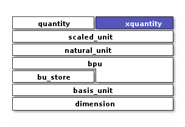

Xquantity
Polymorphic dimensioned quantity with runtime unit checking/conversion
Context
#include <xo/unit/xquantity.hpp>
{kind=link}
Class
Class with run-time unit representation.
-
template<typename Repr = double, typename Int = std::int64_t, typename Int2x = detail::width2x_t<Int>>
class xquantity represent a scalar quantity with polymorphic units.
Reprtype used represent a dimensionless multiple of a natural unit.
Constexpr implementation, but units are explicitly represented:
sizeof(Quantity2) > sizeof(Repr)
Explicit unit representation allows introducing units at runtime, for example in python bindings. See for example xo-pyutil
See quantity for implementation with units established at compile time
Require:
Repr supports numeric operations (+, -, *, /)
Repr supports conversion from double.
Member Variables
Warning
doxygengroup: Cannot find group “xquantity-instance-vars” in doxygen xml output for project “xodoxxml” from directory: /home/roland/proj/xo/xo-unit/.build-ccov/docs/dox/xml
Constructors
Warning
doxygengroup: Cannot find group “xquantity-ctors” in doxygen xml output for project “xodoxxml” from directory: /home/roland/proj/xo/xo-unit/.build-ccov/docs/dox/xml
Access Methods
Warning
doxygengroup: Cannot find group “xquantity-access-methods” in doxygen xml output for project “xodoxxml” from directory: /home/roland/proj/xo/xo-unit/.build-ccov/docs/dox/xml
General Methods
Warning
doxygengroup: Cannot find group “xquantity-methods” in doxygen xml output for project “xodoxxml” from directory: /home/roland/proj/xo/xo-unit/.build-ccov/docs/dox/xml